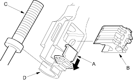
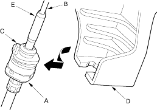
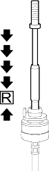
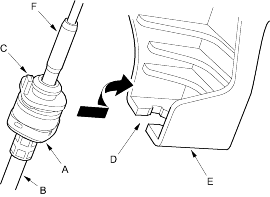

- Remove the ash tray, then remove the centre console lower cover.
- Remove the shift lever console panel.
- Shift the shift lever to
 position.
position. - Slide the lock tab (A) down, then pull the shift cable lock (B) at the joint in the shift cable end and shift cable end holder.
- Shift the shift lever to
 position, then separate the shift cable end (C) from the shift cable end holder (D).
position, then separate the shift cable end (C) from the shift cable end holder (D).

- Rotate the socket holder (A) on the shift cable (B) counter-clockwise a quarter turn; the projection (C) on the socket holder faces direction to remove. Then slide the holder to remove the shift cable from the shift cable bracket base (D).
NOTE: Do not remove the shift cable by twisting the shift cable guide (E).

- Push down the shift cable until it stops, then release your hand. Pull the shift cable back 1 step so that the shift cable is in

- Turn the ignition switch ON (II) and verify that the position indicator light comes on.
- Turn the ignition switch OFF.
- Rotate the socket holder (A) on the shift cable (B) counter-clockwise a quarter turn; the projection (C) on the socket holder is directed opposite the opening (D) of the shift lever bracket base (E).
Slide the holder to the shift cable bracket base and rotate the holder clockwise a quarter turn to secure the shift cable.
NOTE: Do not install the shift cable by twisting the shift cable guide (F).
